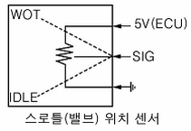
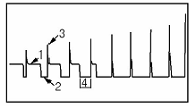
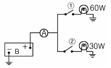
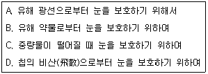

자동차정비기능사 (2009-01-18 기출문제)
1과목: 자동차공학
1. 4행정 기통 가솔린기관에서 점화순서가 1-3-4-2일 대 1번 실린더가 흡입행정을 한다면 다음 중 맞는 것은?
- 3번 실린더는 압축행정을 한다.
- 4번 실린더는 동력행정을 한다.
- 2번 실린더는 흡기행정을 한다.
- 2번 실린더는 배기행정을 한다.
(정답률: 77%)

2. 4행정 4실린더 기관에서 실린더 안지름 80mm, 행정 80mm, 압축비는 10 : 1 이다. 이 기관의 전체 연소실 체적은 약 몇 cc 인가?
- 45cc
- 179cc
- 447cc
- 1786cc
(정답률: 65%)
3. 다음 중 단위환산으로 맞는 것은?
- 4.2 kcal = 1kJ
- 1.6 mile = 1km
- 1Nㆍm = 9.8J
- 1W = 1J/s
(정답률: 50%)
4. 자동차 앞면 안개등의 등광색은?
- 적색 또는 갈색
- 백색 또는 적색
- 백색 또는 황색
- 황색 또는 적색
(정답률: 87%)
5. 크랭크축의 점검부위에 해당 되지 않는 것은?
- 축과 베어링 사이의 간극
- 축의 축방향 흔들림
- 크랭크축의 중량
- 크랭크축의 굽힘
(정답률: 81%)
6. LPG 연료장치가 장착된 자동차의 설명 중 틀린 것은?
- 점화 시기는 가솔린 차의 정규 위치보다 앞당길수 있다.
- 가스누설 개소는 액체 패킹이나 LPG 전용 시일 테이프(seal tape)로 막는다.
- 가스압력은 최저 1kgf/cm2가 유지될 수 있도록 100%의 프로판으로 되어있는 연료가 적당하다.
- 점화플러그는 가솔린 차에 비하여 장시간 사용할 수 있다.
(정답률: 68%)
7. 방열기 압력식 캡에 관하여 설명한 것이다. 알맞은 것은?
- 냉각범위를 넓게 냉각효과를 크게 하기 위하여 사용된다.
- 부압 밸브는 방열기 내의 부압이 빠지지 않도록 하기 위함이다.
- 게이지 압력은 2~3kgf/c㎡이다.
- 냉각수량을 약 20% 증가 시키기 위해서 사용된다.
(정답률: 56%)
8. 디젤 커먼레일 엔진의 구성 부품이 아닌 것은?
- 인젝터
- 커먼레일
- 분사펌프
- 연료 압력 조정기
(정답률: 47%)
9. 기관 오일펌프의 종류에 맞지 않는 것은?
- 기어 펌프
- 피스톤 펌프
- 베인 펌프
- 로터리 펌프
(정답률: 59%)
10. 공기량을 측정하는 센서의 종류가 아닌 것은?
- 핫 와이어 타입
- 핫 필름 타입
- 칼만와류 타입
- 포토 다이오드 타입
(정답률: 82%)
11. 산소센서 출력전압에 영향을 주는 요소가 아닌 것은?
- 혼합비
- 흡입공기온도
- 산소센서의 온도
- 배기가스 중의 산소 잔존량
(정답률: 56%)
12. 과급기에서 공기의 속도 에너지를 압력 에너지로 바꾸는 장치는?
- 디플렉터(Deflecter)
- 터빈(Turbine)
- 디퓨저(Diffuser)
- 루트 슈터 차져(loot super charger)
(정답률: 64%)
13. 스로틀(밸브) 위치 센서에 그림과 같이 5V의 전압이 인가된다. 스로틀(밸브) 위치 센서가 완전히 개방시는 몇 V이 전압이 출력축(시그널)에 감지되는가?

- 0V
- 2 ~ 3V
- 4 ~ 5V
- 12V
(정답률: 70%)
14. 전자제어 기관의 공전속도 조절기구(Ield Speed Actuator)의 역할이 아닌 것은?
- 대시포트 작용(DASH-POT)
- 공전시 엔진부하에 따른 엔진 회전수 보상
- 냉간 운전시 냉각수 온도에 따른 공전시 공기유량 조절
- 공기 유량을 검출하여 컴퓨터로 전송
(정답률: 53%)
15. TPS(Throttle Position Sensor)의 기능과 관계가 먼 것은?
- TPS는 스로틀 보디(Throttle Body)의 밸브 축과 함께 회전한다.
- TPS는 배기량을 감지하는 회전식 가변 저항이다.
- 스로틀 밸브의 회전에 따라 출력 전압이 변화한다.
- TPS의 결함이 있으면 변속 충격 또는 다른 고장이 발생한다.
(정답률: 64%)
16. 가솔린 분사장치의 연료 중량 보정과 관계가 없는 부품은?
- 수온센서
- 흡기온도 센서
- 스로틀 위치 센서
- 진공 스위치
(정답률: 70%)
17. 연료 탱크 내의 증발가스를 포집후 엔진으로 유입시켜 연소 시키는 장치는?
- 캐니스터와 퍼지솔레노이드
- 포지티브 크랭크 케이스 벤틸레이션(P.C.V) 밸브
- 배기가스 재순환 장치 (EGR)
- 삼원촉매
(정답률: 58%)
18. 인젝터 분사시간 결정에 가장 큰 영향을 주는 센서는?
- 수온센서
- 공기온도센서
- 노크센서
- 흡입공기량센서
(정답률: 66%)
19. 흡기 매니폴드의 압력에 관한 설명으로 옳은 것은?
- 외부 펌프로부터 만들어 진다.
- 압력은 항상 일정하다.
- 압력변화는 항상 대기압에 의해 변화한다.
- 스로틀 밸브의 개도에 따라 달라진다.
(정답률: 69%)
20. 디젤 기관의 배기가스 중 입자의 형태를 갖는 것은?
- PM
- CO
- HC
- NOx
(정답률: 52%)
2과목: 자동차정비 및 안전기준
21. 아래 그림은 EGR량 증가 시의 솔레노이드 파형이다. 구동전압을 나타낸 것은?

- 1
- 2
- 3
- 4
(정답률: 50%)
22. LPG 차량에서 믹서의 스로틀밸브 개도량을 감지하여 ECU에 신호를 보내는 것은?
- 아이들 업 솔레노이드
- 대시포트
- 공전속도 조절밸브
- 스로틀 위치 센서
(정답률: 73%)
23. 벨로즈형 수온조절기의 내부에 밀봉되어 있는 액체는?
- 왁스
- 에테르
- 경우
- 냉각수
(정답률: 57%)
24. 종감속기의 감속비가 4 : 1 일 때 구동 피니언이 4회전 하면 링 기어는 몇 회전하는가?
- 4회전
- 3회전
- 2회전
- 1회전
(정답률: 75%)
25. 조향 핸들의 유격이 크게 되는 원인으로 틀린 것은?
- 볼 이음의 마멸
- 타이로드의 휨
- 조형 너클의 헐거움
- 앞바퀴 베어링의 마멸
(정답률: 59%)
26. 전부동식 차구에서 뒤 차축을 탈거작업을 하려고 할 때 맞는 것은?
- 허브를 떼어낸 다음 뒤 차축을 탈거작업이 가능하다.
- 허브를 떼어내지 않고 뒤 차축을 탈거작업이 가능하다.
- 바퀴를 떼어낸 다음 뒤 차축을 탈거작업이 가능하다.
- 바퀴를 꽉 조인 다음 뒤 차축을 탈거작업이 가능하다.
(정답률: 61%)
27. 스테빌라이저(stabilizer)에 관한 설명으로 가장 거리가 먼 것은?
- 일종의 토션바 이다.
- 독립 현가식에 주로 설치된다.
- 차체의 롤링(rolling)을 방지한다.
- 차체가 피칭(pitching) 할 때 작용한다.
(정답률: 56%)
28. 전자제어 파워스티어링(EPS)에 대한 설명중 틀린 것은?
- 차량속도가 고속이 될수록 조향력이 더 요구된다.
- 엔진 회전수에 따라 조향력을 변화시키는 회전수 감응식이 있다.
- 차속에 따라 조향력을 변화시키는 차속 감응식이 있다.
- 고속 시 스티어링 휠이 가벼울수록 좋다.
(정답률: 78%)
29. 유압식 제동장치에서 제동력이 떨어지는 원인 중 틀린 것은?
- 브레이크 오일의 누설
- 엔진 출력 저하
- 패드 및 라이닝의 마멸
- 유압장치에 공기 유입
(정답률: 71%)
30. 하이드로 백을 설치한 차량에서 브레이크 패달 조작이 무거운 원인이 아닌 것은?
- 진공용 첵밸브의 작동이 불량하다.
- 진공 파이프 각 접속부에서 새는 곳이 있다.
- 브레이크페달 간극이 크다
- 릴레이 밸브 피스톤이 작동이 불량하다.
(정답률: 63%)
31. 차체의 수직가속도를 줄이기 위하여 가상적인 기준면에 감쇠기를 설치하는 것으로 요철부를 통과할 때 이상으로 활용되는 제어는?
- 스카이훅 제어
- 롤링 제어
- 킥다운 제어
- 속도감응 제어
(정답률: 48%)
32. 클러치 부품 중 플라이휠에 조립되어 플라이휠과 같이 회전하는 부품은?
- 클러치 판
- 변속기 입력축
- 클러치 커버
- 릴리스 포크
(정답률: 60%)
33. 수동변속기에 있는 아이들 기어(idle gear)의 역할은?
- 방향 전환
- 회전력 증대
- 간극 조절
- 감속 조절
(정답률: 44%)
34. 자동변속기에서 일정한 차속으로 주행 중 스로틀 밸브 개도를 갑자기 증가시키면 감속 변속되어 큰 구동력을 얻을 수 있는 것은?
- 리프트 다운
- 킥다운
- 킥업
- 리프트 풋업
(정답률: 79%)
35. 전자제어 자동변속기의 TCU(변속기 컴퓨터)에 입력 정보 센서가 아닌 것은?
- 스로틀 포지션 센서
- 유온 센서
- 펄스 제너레이터
- 중력 센서
(정답률: 65%)
36. 자동변속기에서 원웨이 클러치의 형식이 아닌 것은?
- 랫치형
- 스프래그형
- 롤러형
- 파일럿형
(정답률: 56%)
37. 차륜정렬에서 캠버를 두는 이유로 가장 옳은 것은?
- 조향 바퀴의 방향성을 주기 위하여
- 조향 핸들의 조작을 가볍게 하기 위하여
- 직진 방향으로 가려는 힘의 향상을 위하여
- 타이어의 슬립과 마멸을 방지하기 위하여
(정답률: 37%)
38. ABS(Anti Break System)의 구성요소가 아닌 것은?
- 휠 스피트 센서
- 브레이크 스위치
- 프리뷰 센서
- 하이드로롤릭 유닛
(정답률: 75%)
39. 자동차로 서울에서 대전까지 187.2km를 주행 하였다. 출발시간은 오후 1시 20분, 도착 시간은 오후 3시 8분이었다면 평균 주행속도는?
- 약 126.5km/h
- 약 104km/h
- 약 156km/h
- 약 60.78km/h
(정답률: 70%)
40. 지면과 직접 접촉은 하지 않고 주행 중 가장 많은 완충작용을 하고 타이어 규격 및 각종 정보가 표시되는 부분은?
- 카커스(carcass)부
- 트레드(tread)부
- 사이드월(side wall)부
- 비드(bead)부
(정답률: 59%)
3과목: 안전관리
41. 가솔린 기관 무배전기(DLI) 시스템의 장점을 배전기식과 비교한 것이다. 틀린 것은?
- 단속 트랜지스터의 수가 적어져 간단하다.
- 기계적인 마모가 없다.
- 캠축 내의 배전기 구동 장치가 필요 없다.
- 코일에서 최대출력을 내기 위하여 1차 전류를 형성하는데 시간이 적게 걸린다.
(정답률: 42%)
42. 12V의 배터리에 12V용 전구 2개를 그림과 같이 결선하고① 및 ② 스위치를 연결하였을 때 A에 흐르는 전류는 얼마인가?

- 6.5A
- 65A
- 7.5A
- 75A
(정답률: 57%)
43. 다이오드에 대한 설명으로 틀린 것은?
- 다이오드는 P형 반도체와 N형 반도체를 접합시킨 것이다.
- P형 반도체와 N형 반도체의 집합부를 공핍층이라 한다.
- 발광 다이오드 PN 접합면에 역방향 전압을 걸면 에너지의 일부가 빛으로 되어 외부에 발산한다.
- 제너현상은 역방향 제너전압을 적용하시면 공핍층의 가전자는 역방향 전압의 힘에 전휴가 흐르는 현상을 말한다.
(정답률: 59%)
44. 자동차용 납산 축전지에 관한 설명으로 맞는 것은?
- 일반적으로 축전지의 음극 단자는 양극단자 보다 크다
- 정전류 충전이란 일정한 충전 전압으로 충전하는 것을 말한다.
- 일반적으로 충전시킬 때는 + 단자는 수소가, - 단자는 산소가 발생한다.
- 전해액의 황산 비율이 증가하면 비중은 높아진다.
(정답률: 53%)
45. 기동전동기에서 오버런닝 클러치를 사용하지 않는 방식은?
- 벤딕스식
- 전기자 섭동식
- 피니언 섭동식
- 링기어 섭동식
(정답률: 55%)
46. 자동차용 교류 발전기에서 응용한 것은?
- 플레밍의 왼손 법칙
- 플레밍의 오른손 법칙
- 옴의 법칙
- 자기포화의 법칙
(정답률: 78%)
47. 자동차의 경음기에서 음질 불량의 원인으로 가장 거리가 먼 것은?
- 다이어프램의 균열이 발생한다.
- 전류 및 스위치 접촉이 불량하다.
- 가동판 및 코어의 헐거운 현상이 있다.
- 경음기 스위치 쪽 배선의 접지가 되었다.
(정답률: 60%)
48. 퓨즈에 관한 설명으로 맞는 것은?
- 퓨즈는 정격전류가 흐르면 회로를 차단하는 역할을 한다.
- 퓨즈는 과대 전류가 흐르면 회로를 차단하는 역할을 한다.
- 퓨즈는 용량이 클수록 전류가 정격전류가 낮아진다.
- 용량이 작은 퓨즈는 용량을 조정하여 사용한다.
(정답률: 86%)
49. 전자동 에어컨 시스템에서 컨트롤 스위치 신호에 의해 컴퓨터가 제어하지 않는 것은?
- 히터 밸브
- 송풍기 속도
- 컴프레서 클러치
- 맵센서
(정답률: 66%)
50. 중앙집중식 제어장치(ETACS 또는 ISU)의 입ㆍ출력 요소의 역할에 대한 설명 중 틀린 것은?
- 열선스위치 : 열선 작동 여부 감시
- INT 스위치 : 운전자의 의지인 볼륨의 위치 검출
- 모든 도어 스위치 : 각 도어 잠김 여부 감지
- 핸들 록 스위치 : 와셔 작동 여부 감지
(정답률: 72%)
51. 안전표지에 사용되는 색체에서 보라색은 주로 어는 용도에 사용하는가?
- 방화 표시
- 주의 표시
- 방향 표시
- 방사능 표시
(정답률: 69%)
52. 기계작업시의 일반적이 안전사항이 아닌 것은?
- 주유시는 지정된 오일을 사용하며, 기계는 운전을 정지 시킨다.
- 고장의 수리 청소 및 조정시에는 동력을 끊고 다른 사람이 작동시키지 않도록 표시해 둔다.
- 운전중 기계로부터 이탈할 때는 운전을 정지시킨다.
- 기계운전 중 정전이 발생되었을 때는 각종 모터의 스위치를 켜둔다.
(정답률: 86%)
53. 공기기구 사용에서 적합하지 않은 것은?
- 공기기구의 활동부위에는 윤활유가 묻지 않게 할것
- 공기기구를 사용할 때는 보호안경을 사용할 것
- 고무 호스가 꺽여 공기가 새는 일이 없도록 할 것
- 공기기구의 반동으로 생길 수 있는 사고를 미연에 방지할 것
(정답률: 47%)
54. 스패너 작업시의 안전수칙에 알맞지 않은 것은?
- 주위를 살펴보고 조심성 있게 죌 것
- 스패너를 몸 바깥쪽으로 밀지 말고 앞 쪽으로 당길 것
- 스패너는 조금씩 돌리며 사용할 것
- 힘겨울 때는 스패너 자루에 파이프를 끼워서 작업할 것
(정답률: 84%)
55. 중량물을 들어 올리거나 내릴 때 손이나 발이 중량물과 지면 등에 끼어 발생하는 재해는?
- 낙하
- 충돌
- 전도
- 협착
(정답률: 76%)
56. 앤빌(anvil)과 같은 무거운 물건을 운반할 때의 안전사항 중 틀린 것은?
- 인력으로 운반시 다른 사람과 협조하에 조심성 있게 운반한다.
- 체인블럭이나 리프트를 이용한다.
- 작업장에 내려놓을 때에는 충격을 주지 않도록 주의한다.
- 반드시 혼자 힘으로 운반한다.
(정답률: 89%)
57. 기관부품을 점검시 작업 방법으로 가장 적합한 것은?
- 기관을 가동과 동시에 부품의 이상 유무를 빠르게 판단한다.
- 부품을 정비할 때 점화스위치를 ON 상태에서 축전케이블을 탈거한다.
- 산소센서의 내부저항을 측정하지 않는다.
- 출력전압은 쇼트시킨후 점검한다.
(정답률: 46%)
58. 다음 부품 중 분해시 솔벤트로 닦으면 안 되는 것은?
- 릴리스 베어링
- 십자축 베어링
- 허브 베어링
- 차동장치 베어링
(정답률: 68%)
59. 납산 축전지(BATTERY) 충전시 주의사항이 아닌 것은?
- 축전지 충전은 상온의 밀폐된 곳에서 실시한다.
- 축전지가 단락하여 스파크가 일어나지 않게 한다.
- 환기장치가 적절하지 못한 작업장에서는 축전과 과충전을 하여서는 안된다.
- 전해액을 혼합할 /때에는 증류수에 황산을 천천히 붓는다.
(정답률: 74%)
60. 안전상 보안경 착용의 적합성을 보기 항에서 모두 고른것은?

- A-B-C
- B-C-D
- A-B-D
- A-B-C-D
(정답률: 58%)